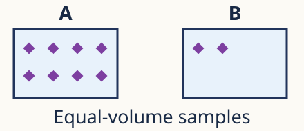
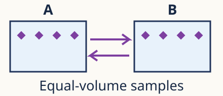
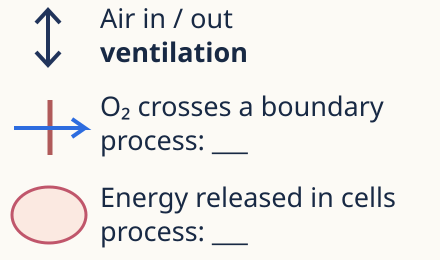

Support cards
Use after an individual attempt. Keep your own thinking. Close content prompts for the fresh check.
G · Gradient comparison

Label higher / lower. Complete a separate net arrow. Count alone is insufficient if volumes differ.
Different recheck: Equal volumes contain 9 and 3 particles. Which is more concentrated? Draw the net arrow.
Model answer & criteria · after your attempt
Model response A has 8 particles and B has 2 in equal volumes. A is higher; B lower. The net arrow is A → B. If volumes differ, particle count alone is insufficient; compare amount per unit volume.
Model response The 9-particle region has higher concentration. Net transfer is 9 → 3 under the stated conditions.
Success criteria Correct high/low labels and net arrow. · Same substance and equal-volume comparison.
Success criteria Same substance in equal volumes. · Higher concentration and net direction correct.
S · Random movement
Complete: particles move ___. Add two directions. For net movement, use P1: A=15, B=5 in equal volumes.
Different recheck: Can one dye particle move back towards the original drop? Explain the individual and overall results.
Model answer & criteria · after your attempt
Model response Use varied individual directions, including back towards the starting region. Particles move randomly. The four-particle picture supplies no concentration comparison, so it cannot determine a net direction. In P1, A has 15 particles and B has 5 in equal volumes: more cross A → B on average initially, so net A → B.
Model response Yes. An individual particle moves randomly and may head back. Initially, the net transfer is away from the higher-concentration region.
Success criteria Individual directions varied. · Net direction uses P1 concentration data, not the four-particle spacing.
Success criteria Individual can move back. · Distinguishes random direction and net result.
E · Equal concentration

Draw opposing movement arrows. Complete: particle movement ___; net movement ___.
Different recheck: An opening joins equal-volume regions with equal oxygen concentration. Will oxygen stop crossing? Explain.
Model answer & criteria · after your attempt
Model response Movement continues randomly in both directions; net movement is zero because opposite average transfers balance.
Model response No. Random crossings continue in both directions; opposite average transfers balance, so no net transfer.
Success criteria Opposing movement arrows. · Continued motion and balanced net transfer.
Success criteria Movement continues. · Balanced on average; no net transfer.
X · Process distinction

First match is done: ventilation = air in / out. Complete the other two process labels.
Different recheck: Air leaves lungs; oxygen crosses into blood; cells release usable energy. Name the three processes.
Model answer & criteria · after your attempt
Model response Air in/out = ventilation. Oxygen crossing the boundary = diffusion/gas exchange by diffusion. Usable energy released in cells = cellular respiration.
Model response Ventilation; diffusion (gas exchange by diffusion); cellular respiration.
Success criteria Three process labels correctly matched.
Success criteria Three correctly matched processes. · Diffusion transfers gas; ventilation moves air.